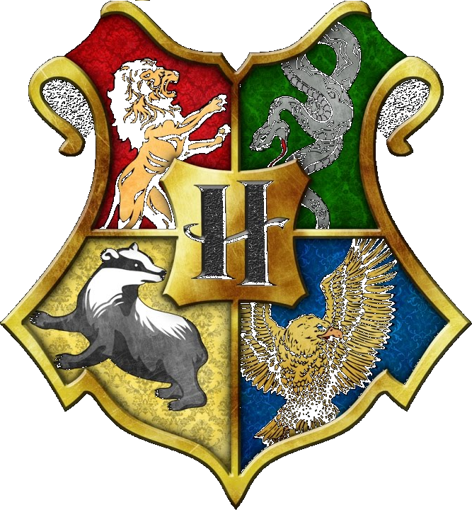

Hogwarts
School of Witchcraft and Wizardry
Hogwarts là một tòa lâu đài huyền bí cổ xưa với bảy tầng lầu, nằm trên một vùng đất hoang sơ hùng vĩ. Đây là trường đào tạo những người có khả năng pháp thuật trở thành các phù thủy và pháp sư ở Anh và Scotland. Là ngôi trường nội trú, nhận học sinh từ 11 đến 17 tuổi.
Biểu tượng của Hogwarts là một tấm khiên,nó được chia làm bốn phần, mỗi phần chứa đựng biểu tượng của một Nhà: con sư tử dũng mảnh trong phông nền màu đỏ, con bạch xà lươn lẹo trong phông xanh lá, con lửng nhanh nhảu đen nhánh trên phông vàng, và chú đại bàng quyết thắng vàng óng giữa phông xanh da trời. Ngay chính giữa bốn hình ảnh đó là một chữ "H" là biểu trưng đại diện cho tên trường.Khẩu hiệu của trường là Draco dormiens nunquam titillandus, có nghĩa là "Đừng bao giờ chọc lét một con rồng đang ngủ". Ngôi trường được phù phép để ngăn chặn việc đột nhập bằng độn thổ, chổi bay. Đầu năm học, các học sinh sẽ được đón tiếp ngay khi vừa rời khỏi ga và đi thuyền vào trường, từ năm thứ hai trở lên thì đi bằng xe do Vong mã kéo.
Các Nhà trong Hogwarts
Gryffindor
Nhà Gryffindor chú trọng vào lòng dũng cảm, tinh thần thượng võ và tính táo bạo. Con vật biểu tượng của nhà này là con sư tử; màu là đỏ tươi và vàng. Nick-suýt-mất-đầu là con ma của nhà. Người sáng lập là Godric Gryffindor. Đây được cho là ký túc xá xuất sắc...
Slytherin
Giống như Salazar Slytherin, người sáng lập ra nhà, nhà Slytherin đề cao tham vọng, xảo quyệt, khả năng lãnh đạo và sự tháo vát. Chiếc nón Phân loại đã nói rằng phù thủy nhà Slytherin sẽ làm bất chấp tất cả để đạt được điều mà họ muốn. Con vật biểu tượng của nhà....
Hufflepuff
Hufflepuff, được thành lập bởi Helga Hufflepuff, đề cao sự chăm chỉ, lòng trung thành, sự quả quyết, tính kiên nhẫn, tình hữu nghị và chơi đẹp chứ không ở năng khiếu của từng thành viên. Con vật biểu tượng cho nhà là lửng, và màu vàng hoàng yến và đen là màu của nhà....
Ravenclaw
Ravenclaw đề cao trí thông minh, tri thức và trí tuệ. Con vật biểu tượng của nhà là con ưng, và màu chủ đạo là xanh nước biển và màu đồng. Con ma của nhà Ravenclaw là Helena Ravenclaw, con gái của Rowena Ravenclaw, hay Bà Xám. Nhà được thành lập bởi Rowena Ravenclaw...